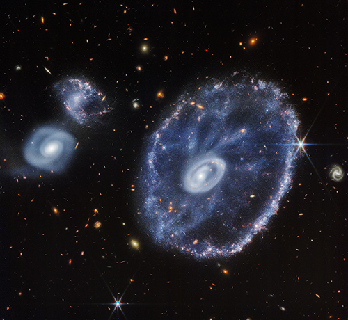

This image of the Cartwheel and its companion galaxies is a composite from Webb’s Near-Infrared Camera (NIRCam) and Mid-Infrared Instrument (MIRI), which reveals details that are difficult to see in the individual images alone.
This galaxy formed as the result of a high-speed collision that occurred about 400 million years ago. The Cartwheel is composed of two rings, a bright inner ring and a colorful outer ring. Both rings expand outward from the center of the collision like shockwaves.
However, despite the impact, much of the character of the large, spiral galaxy that existed before the collision remains, including its rotating arms. This leads to the “spokes” that inspired the name of the Cartwheel Galaxy, which are the bright red streaks seen between the inner and outer rings. These brilliant red hues, located not only throughout the Cartwheel, but also the companion spiral galaxy at the top left, are caused by glowing, hydrocarbon-rich dust.
In this near- and mid-infrared composite image, MIRI data are colored red while NIRCam data are colored blue, orange, and yellow. Amidst the red swirls of dust, there are many individual blue dots, which represent individual stars or pockets of star formation. NIRCam also defines the difference between the older star populations and dense dust in the core and the younger star populations outside of it.
Webb’s observations capture the Cartwheel in a very transitory stage. The form that the Cartwheel Galaxy will eventually take, given these two competing forces, is still a mystery. However, this snapshot provides perspective on what happened to the galaxy in the past and what it will do in the future.
NIRCam was built by a team at the University of Arizona and Lockheed Martin’s Advanced Technology Center.
MIRI was contributed by ESA and NASA, with the instrument designed and built by a consortium of nationally funded European Institutes (The MIRI European Consortium) in partnership with JPL and the University of Arizona.